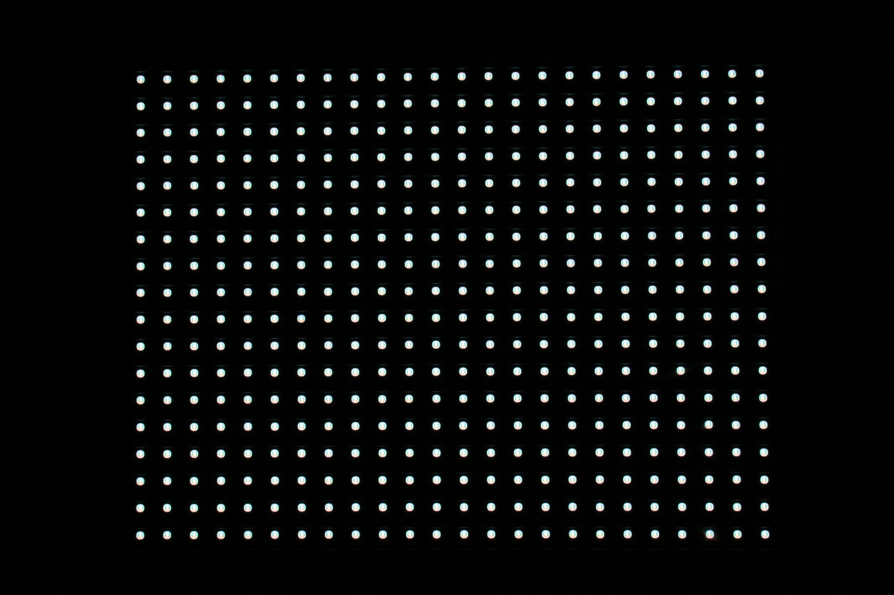
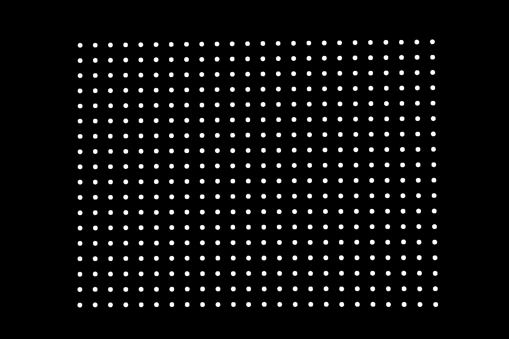
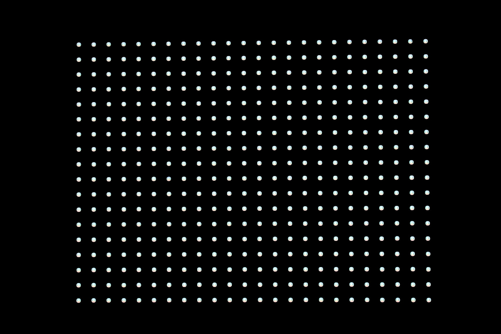
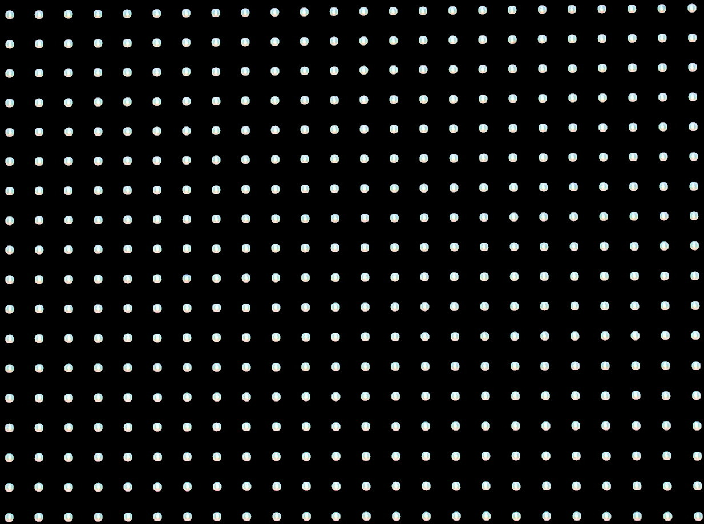
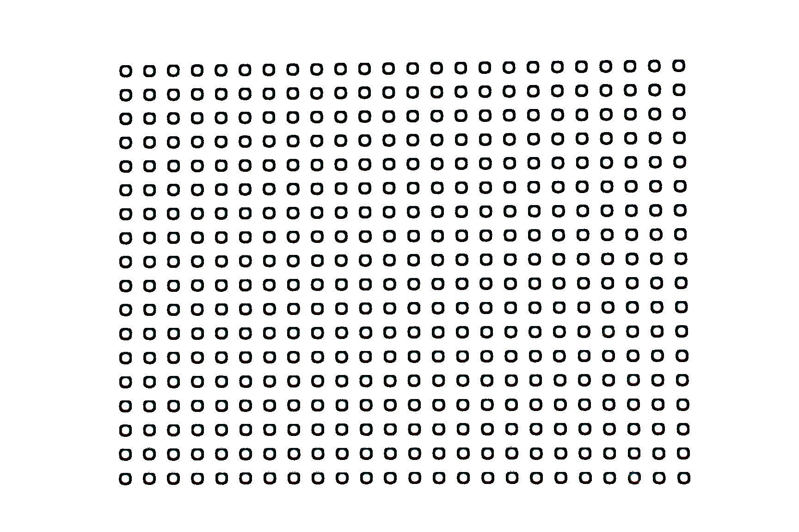

Now we have an image of the LED display with optimal exposure. We need to remove the background from the pixels to be analyzed.

We could threshold the image to B/W to filter out the relatively dark background.
../../script/fuzzythresh -r 10 gray.jpg fuzzythresh.jpg
Then we could use the result as a mask to cleanup the original image.
composite -compose Multiply fuzzythresh.jpg gray.jpg masked.jpg
The edge pixels are now all black. We could remove them by trimming the image.
convert -trim masked.jpg trimmed.jpg
An alternate approach is to use the whiteboard script to identify all the pixels.
../../script/whiteboard gray.jpg whiteboard.jpg
Further processing can be used to extract pixel properties such as location and radius.